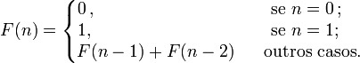

Fibonacci
Na matemática, os números de Fibonacci são uma sequência ou sucessão definida como recursiva pela fórmula abaixo:

O algoritmo recursivo que define a série aplica-se, na prática, conforme a regra sugere:
Começa-se a série com 0 e 1; a seguir, obtém-se o próximo número de
Fibonacci somando-se os dois anteriores e, assim, sucessiva e infinitamente.
Os primeiros números de Fibonacci para n = 0, 1,são:
0, 1, 1, 2, 3, 5, 8, 13, 21, 34, 55, 89, 144, 233, 377, 610, 987, 1597, 2584, 4181, 6765, 10946
Esta sequência foi descrita primeiramente por Leonardo de Pisa, também conhecido como Fibonacci, para descrever o crescimento de uma população de coelhos.
A própria definição da sequência de Fibonacci pode ser tomada como base para implementar um algoritmo recursivo
que gera os termos da sequência, como é mostrado a seguir: função fib(n)
Se n < 2 então
retorne n
caso contrário
retorne fib(n-1)+fib(n-2)
Código
#include <stdio.h>
#include <stdlib.h>
int fib(int n) {
if (n == 0)
return (0);
else if (n == 1)
return (1);
else
return (fib(n - 1) + fib(n - 2));
}
int main(void) {
setbuf(stdout, NULL);
int x;
printf("** Fibonacci **\n\n");
printf("Digite um n�mero: ");
fflush(stdin);
scanf("%d", &x);
printf("\nFibonacci de %d � %d", x, fib(x));
return 0;
}